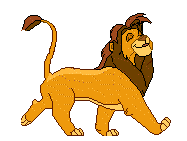
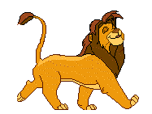

Sites touristiques à visiter à L'ouest Bafoussam Foumban au Cameroun

Que voir de Bafoussam à Foumban ?
Merveilleusement dotée par la nature, la région de l'ouest a souvent été comparée à l'Auvergne. C'est une région propice aux voyages culturels seul ou en groupe losrque vousvisitez le Cameroun. Elle est vallonnée et est traversée de belles rivières entrecoupées de chutes et cascades. L'ouest, une région à découvrir quand vous êtes en voyage au Cameroun, présente une série de montagnes arrondies, héritages d'anciens volcans. Le climat ici est tempéré, et certaines localités telles Dschang, Bangou stations climatiques, accusent des températures de moyennes annuelles de 20°C. Pays des traditions et des cultures, la région de l'Ouest Cameroun se caractérise par la richesse de son artisanat aux nombreuses variétés d'expression: pipes, ustensiles en terre cuite, figurines et masques en cuivre, tabouret décorés de perles et par les dentelles bamiléké aux costumes pittoresques. Foumban est le siège de l'artisanat camerounais. Généralement, la ville de Bafoussam est le point de départ de votre voyage au Cameroun, lorsque vous decidez d'aller en immersion culturelle chez les grassfields.
1 - Chutes, cascades, lacs, plages, pics monts grottes, chefferies, palais et monuments dans le département de la Menoua, à Dschang
- Les chutes de Mami Wata: C'est une chute d'une profondeur de 56 m. C'est une vallée en forme de cuvette couverte d'une forêt sacrée et des cases traditionelles.
- Les chutes de Metche:
- Les cascades de Kigang:Situées dans l'arrondissement de Dschang, à 5 km de la ville.
Lac Municipal de Dschang:
Site touristique. Il est le résultat d'un projet d'aménagement en centre urbain de loisirs, piloté par la mairie urbaine de Dschang.-Pics, monts et grottes
Pic de Neyang:Grand rocher en pic au sommet duquel se dresse un palmier
Mont Mete: Montagne pittoresque au sommet de laquelle un vue panoramique permet d'apercevoir les montagnes du Mungo.
Falaise de Santchou:C'est une importante falaise typique, luxuriante, avec des habitations et des plantations accrochées aux flancs des collines où serpente une route joignant la plaine de Santchou à la ville de Dschang. Vous profiterez d'une vue exceptionnelle en regardant en contrebas la plaine de Santchou.
Les rochers de Fongo Tongo: C'est une importante muraille rocheuse de trachytes dans un paysage varié à gorges encaissées.
-Chefferies monuments et palais traditionnels chez les peuples des grassfields
La chefferie Foto:
chefferie avec cour comportant plusieurs cases patrimoniales
Centre Climatique de Dschang:C'est un complexe touristique construit sur 10 hectares, d'aspect typique en pavillon de 50 chambres, situé à 1400 m d'altitude bâtit en 1942 pour abriter les officiers français ne pouvant rentrer en Europe à cause de la seconde guerre mondiale. Le climatest agréable dans un cadre enchanteur. C'est un complexe touristique très visité qui fait la fierté du tourisme à l'ouest Cameroun.
Les cases bamiléké du marché de Dschang:La place du marché de Dschang est symbolisée par trois cases patrimoniales aux toits coniques, semblables à des champignons et reflètant la tradition du peuple bamiléké.
Le Centre artisanal de Dschang:Situé au centre ville de Dschang, il est riche en objet d'art des artistes et des sculpteurs venant de toute la région.
Les plantation de thé de Djutitsa:Ce site d'interêt agro-touristique est très spectaculaire et engorgé dans les montagnes de l'Ouest du Cameroun avec une vue panoramique dont vous profiterez amplement lors de votre voyage au Cameroun.
2 - Chutes, cascades, lacs, barrages, plages, cols monts et grottes dans le Haut-Nkam
- Chutes, cascades lacs...
Idéalement situé à 1km de la ville de Bafang, les chutes de la Mouanko signale leur présence dès votre passage sur l'axe principale de la ville. Elles ont une hauteur de 40 m et entourées de forêts. Elles sont très spectaculaires et présentent un très bel interêt touristique. On citera entre autres
- Cols, Monts et grottes
Le col de Batcha: Formé dans le massif Bangou, Batchingou, Batcha. C'est un magnifique massif montagneux à l'est de l'axe Bangangté - Bafang qui se prolonge au col de Bana.
Les autres cols sont
7 - Chutes, lacs, cascades, monts et chefferies dans le Noun
Le Lac Nfou,c'est un lac de cratère à 1900m d'altitude, très encaissé avec des parois en pics de près de 200m de haut, très pittoresque avec un paysage enchanteur
Le Lac Petpenoun,
lac de cratère d'accés très facile et très enchanteur, occupant une superfice de près de 100 ha. Deux amoureux de la nature y ont construit un paradis sur terre où on peut s'adonner à des activités comme l'équitation, la planche à voile, le VTT, les sports nautiques, la pêche sportive, les randonnées en quad, la plongée.